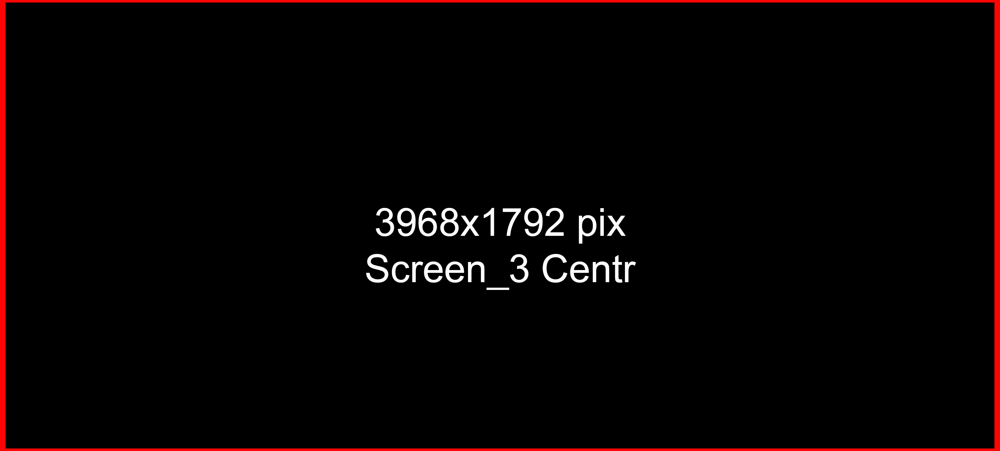
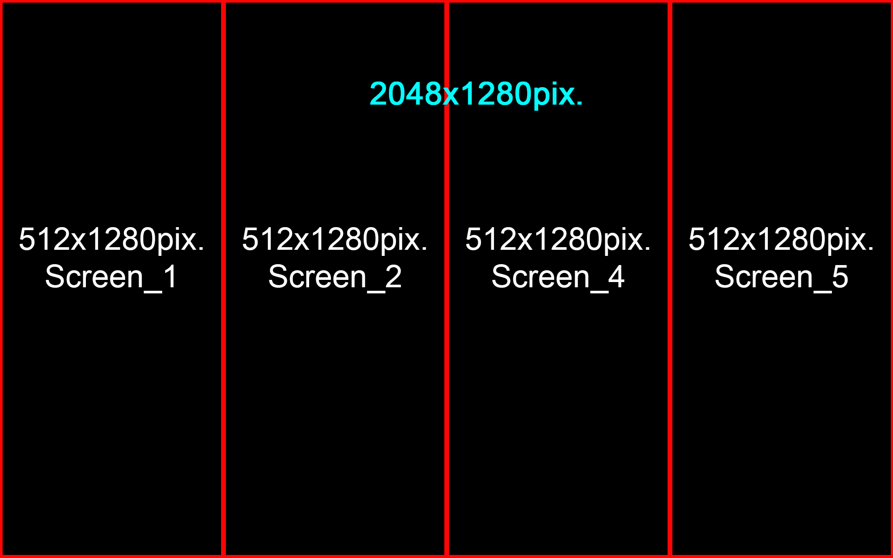
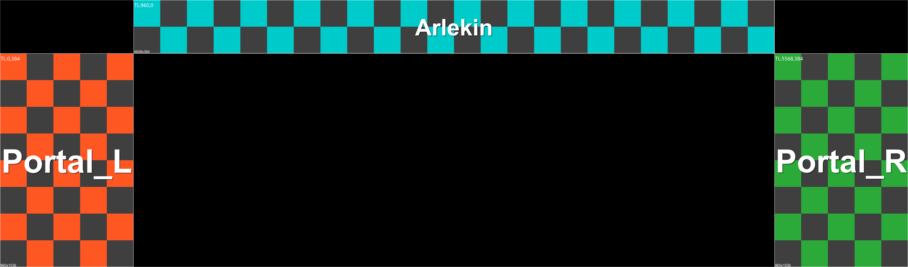
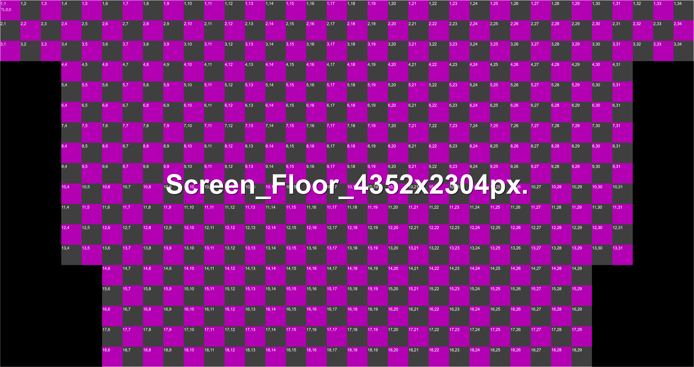

Screen_3

3968 × 1792px
Физический размер: 12 × 5,5 м
Нажми на схему, чтобы открыть оригинал
TODESPRODUCTION / ТЕАТР
Технические требования к подготовке видеоконтента для экранов театра TODES. Оригинальные схемы можно посмотреть и скачать в полном разрешении.
Видеофайлы: QuickTime (.mov), кодек DXV-3 Normal Quality, без альфа-канала (No Alpha) или с альфа-каналом (With Alpha).
Частота кадров: 25 fps, без полей, квадратный пиксель.
Изображения: JPG или PNG, цветовое пространство RGB.
Звук: При наличии — внутри файла, PCM Uncompressed, 48 кГц, 16 бит, стерео.
Кодек: Скачать Resolume DXV-3.

Физический размер: 12 × 5,5 м
Нажми на схему, чтобы открыть оригинал

Четыре боковых экрана: каждый 2 × 5 м; общая ширина — 8 м
Нажми на схему, чтобы открыть оригинал

Arlekin: 12 × 1 м; Portal: 2,5 × 4 м; Portal_L + Portal_R: 5 × 4 м
Нажми на схему, чтобы открыть оригинал

Напольный экран: 17 × 9 м
Нажми на схему, чтобы открыть оригинал
Сетки в масштабе 1:1 соответствуют пикселям экранов. В архиве — четыре оригинальные PNG-схемы и PDF с техническим заданием.
Для проверки присылай тестовый видеоролик длительностью 5–10 секунд.
Электронная почта: nicsev@gmail.com.
Вопросы по видео — Николай: +7 915 024-66-30.